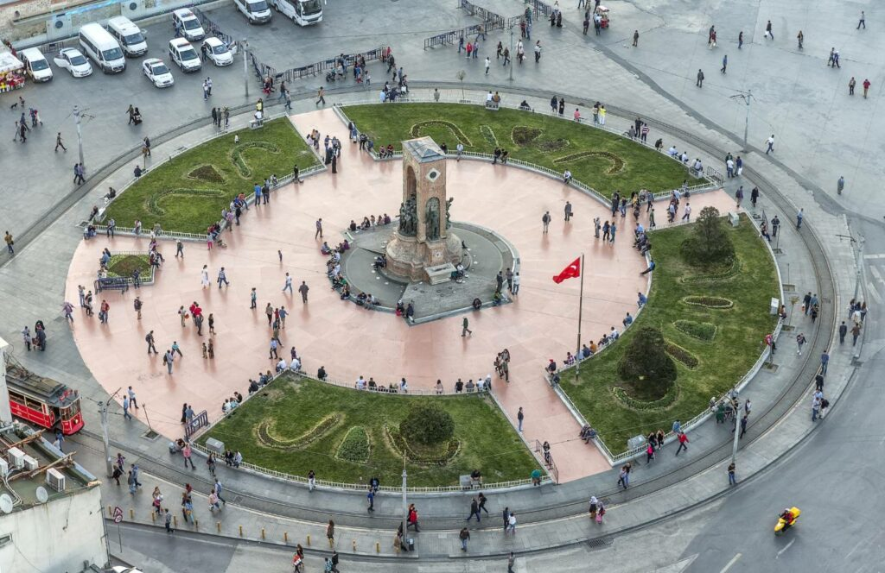

Istanbul First Time Visitor Guide
Istanbul can feel enormous on a first visit. The easiest way to make sense of it is to divide your plans by area and leave enough time between major stops.
Understand the City by Area
Sultanahmet
Major historic monuments and the classic first-visit route.
Beyoğlu
Galata, İstiklal, cafés, culture and nightlife.
Karaköy
Waterfront, restaurants, galleries and a bridge between areas.
Kadıköy
Market, food, cafés and Asian-side neighbourhood life.
Bosphorus
Ferries, waterfront districts, palaces and private experiences.
Princes' Islands
A slower day away from the dense city centre.
Do Not Overpack the Day
Traffic, queues, hills, ferry crossings and simple walking can take more time than a map suggests. Two or three meaningful stops plus food and breaks can feel much better than six rushed attractions.
Transport Basics
- Use public transport when it makes the route simpler.
- Use ferries when crossing the water fits your plan.
- Allow extra time for road journeys at busy periods.
- For airport or time-critical journeys, consider a pre-arranged transfer.
Money, Cards & Receipts
Carry a payment method that works for your trip and keep receipts for significant purchases. When shopping for valuable goods, ask for clear documentation rather than relying only on verbal descriptions.
Build Around Your Interests
If you dislike museums, you do not need a museum-heavy trip. If food matters most, build around markets and restaurants. If architecture matters, give yourself more walking time. Istanbul is large enough to support very different first visits.
Continue Exploring
Planning the practical side?
Our concierge service can help arrange private tours, airport transfers, chauffeur service, restaurant reservations and selected Istanbul experiences around your plans.
Request Concierge →